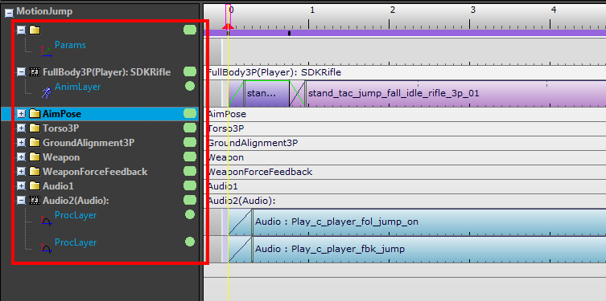
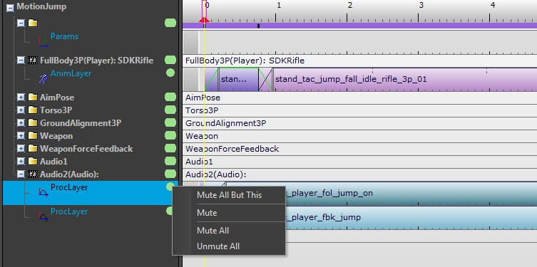
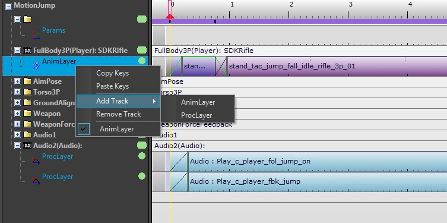
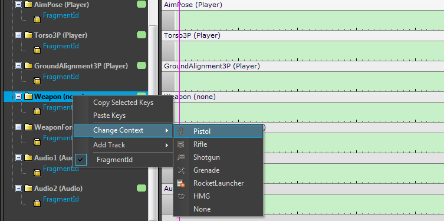
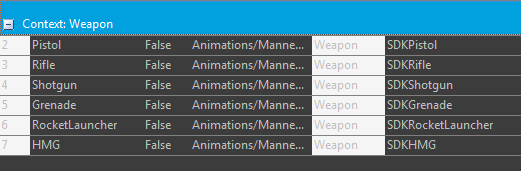
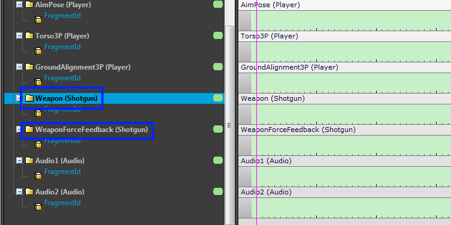
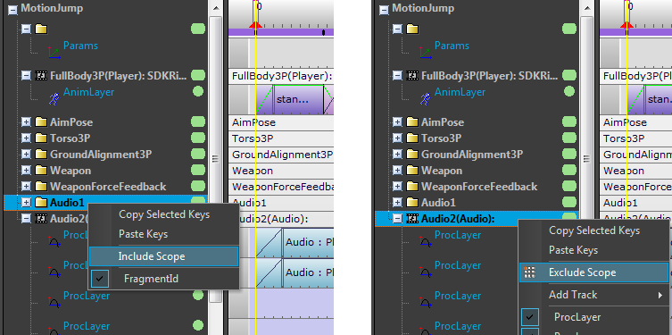

Обзор

В различных подразделах манекена (Редактор фрагментов, Предварительный просмотр или Редактор переходов), вы можете найти панель со списком треков. Эта панель имеет некоторые дополнительные функции, описанные ниже.
Отключение звука осциллографов и треков

(только для CRYENGINE 3.7 и более поздних версий)
Зеленые «точки» справа от названий треков можно использовать для отключения звука осциллографов или отдельных слоев. Щелкните правой кнопкой мыши по ним, чтобы вызвать контекстное меню для управления этим. Цвет точки становится серым, когда слой или область отключены.
Добавление/удаление слоев

(недоступно в Mannequin Предварительный просмотр)
Используйте контекстное меню области или слоя, чтобы добавить новые слои (т.н. треки). Вы можете добавить столько проплееров, сколько захотите, но количество анимационных слоев ограничено тем, как настроена область действия (см. «numLayers» в Файл определения контроллера).
Используйте контекстное меню слоя, чтобы удалить его.
Изменить контекст

Доступно только в Предварительный просмотр и Редактор переходов.
Вы можете установить данные внутри контекста области, используя параметр «Изменить контекст» в контекстном меню области.
Доступные параметры настраиваются в Редактор контекстаи сохранен в Предварительный просмотр. В приведенном выше примере у нас есть следующая настройка параметра для контекста области «Оружие»:

Поскольку обе области «Оружие» и «WeaponForceFeedback» используют контекст области «Оружие», обе области изменятся. Например, если мы выберем «Дробовик» из контекстного меню, результат будет следующим:

Обратите внимание, что UI в настоящее время не показывает контекст области, он показывает только имена областей («Оружие», «WeaponForceFeedback») и названия выбранной в них опции («Дробовик»).
Включить/исключить область

(доступно только в Mannequin Редактор фрагментов)
Это расширенная функция, с помощью которой вы можете override Маска области видимости для конкретных фрагментов.
Например: скажем, все фрагменты в Reload fragmentID воспроизводятся на прицелах Torso3P. Но для ракетной установки вместо этого вы можете использовать FullBody3P+Torso3P. Для этого вам понадобится «override», который станет «элементом override» в Файл определения контроллера.
Вы можете создать или отредактировать override для текущего фрагмента, выбрав «Включить/исключить область» в контекстном меню области. Обратите внимание, что более сложные настройки можно выполнить вручную в Файл определения контроллера чем вы можете сделать, используя этот простой интерфейс включения/исключения. Например, вы можете создать override для тега «винтовка», даже если не существует фрагмента, в состоянии которого есть только слово «винтовка».
Эта функция может вести себя противоречивым образом:
- На приведенном выше снимке экрана, если вы выполните «Включить область» в области Audio1, фрагмент, который раньше воспроизводился в области Audio2, переместится в область Audio1. Это потому, что Процесс выбора фрагмента сначала дает Audio1 возможность выбрать фрагмент. А Audio2 больше не будет учитываться, поскольку в этом контексте области уже включена другая область, и она может быть только одна. (оба Audio1 и Audio2 находятся в контексте контекста Audio)
- Аналогично: на скриншоте выше, если вы сделаете «Включить область» в области Torso3P, область Torso3P исчезнет! Это связано с тем, что и FullBody3P, и Torso3P работают в одном и том же контексте области: Char3P. Уже есть фрагмент, назначенный FullBody3P, который стоит первым в списке, поэтому Torso3P больше не получит фрагмент. В этом случае UI скрывает область видимости.
В обоих этих случаях вы можете быть уверены, что области никогда не исчезнут, присвоив им тег области. Теги области описаны в документе. Mannequin TagState.
На данный момент в редакторе нет простого способа исключить область, если вы случайно включили ее, и она исчезла, как в приведенных выше примерах. Вы можете вернуть файл (Отменить изменения в выбранных файлах в Файловый менеджер). Или вам придется отредактировать Файл определения контроллера вручную и удалите раздел <override>, добавленный редактором.
В будущем выпуске идея «переопределений» будет упрощена и сделана более явной.